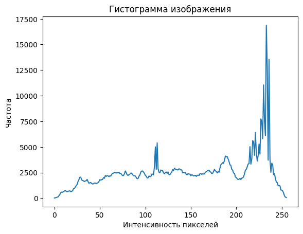
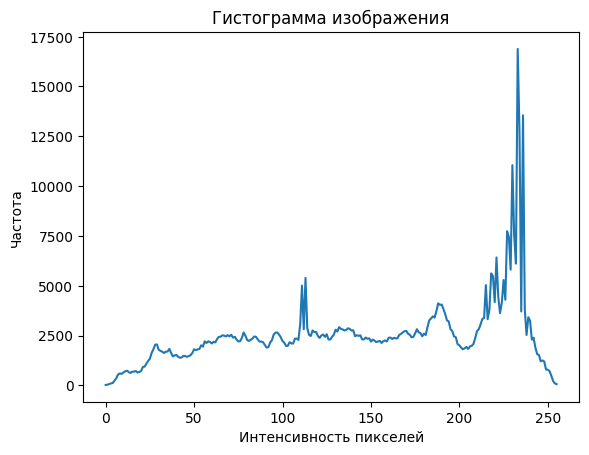
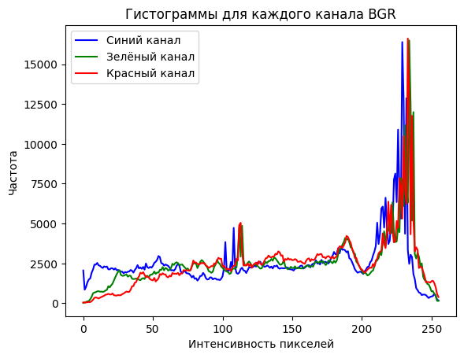
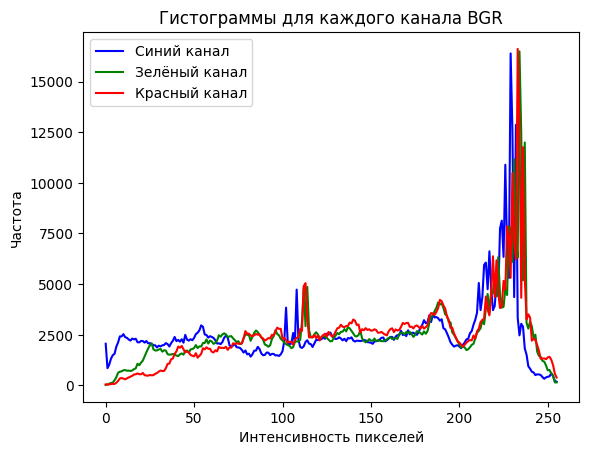

Что такое гистограмма изображения?
Гистограмма изображения — это графическое представление распределения интенсивности пикселей в изображении. Она показывает, сколько пикселей на изображении имеют определённые значения яркости или цвета. Гистограммы играют важную роль в обработке изображений, позволяя анализировать контраст, яркость и другие характеристики изображения.
Гистограмма может быть представлена в одном, двух или трёх каналах: для чёрно-белых изображений (одноканальная гистограмма), для цветных (трёхканальная гистограмма — для каналов RGB или HSV).
Как создать гистограмму в OpenCV?
Для создания гистограммы изображения в OpenCV используется функция cv2.calcHist(). Она позволяет вычислить количество пикселей для каждого значения интенсивности в изображении.
- Функция:
cv2.calcHist() - Параметры:
images: Список изображений для расчёта гистограммы.channels: Каналы для анализа (0 для серого, 0,1,2 для RGB и т.д.).mask: Маска, ограничивающая область анализа (по умолчанию None).histSize: Число бинов (диапазонов значений для расчёта). Например, 256 для 8-битного изображения.ranges: Диапазон значений, который будет учитывать гистограмма (например, [0, 256] для 8-битного изображения).
Пример кода для вычисления гистограммы:
import cv2
import matplotlib.pyplot as plt
# Загружаем изображение
image = cv2.imread('image.jpg', cv2.IMREAD_GRAYSCALE)
# Вычисляем гистограмму
hist = cv2.calcHist([image], [0], None, [256], [0, 256])
# Отображаем гистограмму
plt.plot(hist)
plt.title('Гистограмма изображения')
plt.xlabel('Интенсивность пикселей')
plt.ylabel('Частота')
plt.show()
 

В этом примере создаётся гистограмма для изображения в оттенках серого. Гистограмма отображает, сколько пикселей на изображении имеют различные уровни яркости (от 0 до 255).
Гистограмма для цветных изображений
Для цветных изображений можно построить гистограмму для каждого из цветовых каналов (например, для каналов BGR в OpenCV). В этом случае, для каждого канала изображения будет вычислена отдельная гистограмма.
# Загружаем цветное изображение
image = cv2.imread('image.jpg')
# Разделяем изображение на три канала BGR
blue, green, red = cv2.split(image)
# Вычисляем гистограмму для каждого канала
hist_blue = cv2.calcHist([blue], [0], None, [256], [0, 256])
hist_green = cv2.calcHist([green], [0], None, [256], [0, 256])
hist_red = cv2.calcHist([red], [0], None, [256], [0, 256])
# Отображаем гистограммы для каждого канала
plt.plot(hist_blue, color='blue', label='Синий канал')
plt.plot(hist_green, color='green', label='Зелёный канал')
plt.plot(hist_red, color='red', label='Красный канал')
plt.legend()
plt.title('Гистограммы для каждого канала BGR')
plt.xlabel('Интенсивность пикселей')
plt.ylabel('Частота')
plt.show()
 

В данном примере мы строим гистограммы для каждого из каналов изображения (синий, зелёный и красный) и отображаем их на одном графике. Каждый канал будет иметь свою гистограмму, и каждый будет иметь диапазон значений от 0 до 255.
Нормализация гистограммы
Иногда полезно нормализовать гистограмму для того, чтобы привести её значения в диапазон от 0 до 1. Это помогает визуализировать распределение пикселей без привязки к масштабу.
Для нормализации гистограммы можно использовать функцию cv2.normalize(). Она преобразует значения гистограммы, чтобы они находились в указанном диапазоне.
# Нормализуем гистограмму
cv2.normalize(hist, hist, 0, 1, cv2.NORM_MINMAX)
# Отображаем нормализованную гистограмму
plt.plot(hist)
plt.title('Нормализованная гистограмма')
plt.xlabel('Интенсивность пикселей')
plt.ylabel('Частота')
plt.show()
В этом примере нормализуется гистограмма, чтобы значения лежали в диапазоне от 0 до 1, что помогает в анализе и визуализации.
Равномерное распределение гистограммы
Иногда нужно изменить гистограмму изображения таким образом, чтобы она была более равномерной. Это может быть полезно для улучшения контраста, что часто используется в методах повышения контраста, например, в гистограммной коррекции.
В OpenCV есть функция cv2.equalizeHist(), которая применяет гистограммную коррекцию для улучшения контраста изображения.
# Применяем гистограммную коррекцию
equalized_image = cv2.equalizeHist(image)
# Отображаем результат
plt.imshow(equalized_image, cmap='gray')
plt.title('После коррекции гистограммы')
plt.show()
Эта функция улучшает контраст изображения, распределяя интенсивности пикселей более равномерно, что полезно для улучшения видимости деталей на изображении.
Использование гистограммы для обработки изображений
Гистограммы изображений могут быть полезны в различных задачах обработки изображений, таких как:
- Повышение контраста: Использование гистограммной коррекции для улучшения контраста.
- Удаление шума: Гистограммы помогают анализировать распределение шума на изображении.
- Анализ изображений: Гистограммы позволяют анализировать распределение цветов и яркости.
В совокупности, знание гистограммы изображения позволяет выполнить более точную настройку фильтров, коррекцию цвета и другие операции.